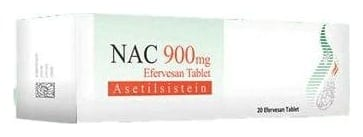

Nac 900 mg Efervesan Tablet, 20 Adet

Ne için kullanılır
KT · Bölüm 1NAC, beyaz, yuvarlak, düz yüzeyli efervesan tabletler şeklindedir. NAC, 20 efervesan tablet, silika jelli kapak ile kapatılmış plastik tüp ambalaj içerisinde piyasaya sunulmaktadır. NAC suda tamamen eritildikten sonra içilerek kullanılan bir ilaçtır. NAC etkin madde olarak asetilsistein içerir. Asetilsistein, bir amino asit olan sistein türevi bir ajandır. Balgam söktürücü etkiye sahiptir. NAC yoğun kıvamlı balgamın atılması, azaltılması, yoğunluğunun düzenlenmesi ekspektorasyonun (Balgamın atılabilmesi) kolaylaştırılması gereken durumlarda, bronkopulmoner (Bronş ve akciğer) hastalıklarda, bronşiyal sekresyon (Solunum yolu salgısı) bozukluklarının tedavisinde kullanılan mukolitik (Balgamı, mukusu parçalayan) bir ilaçtır. Ayrıca yüksek doz parasetamol alımına bağlı olarak ortaya çıkan karaciğer yetmezliğinin önlenmesinde kullanılır. NAC soğuk algınlığı ve solunum yollarının iltihaplanması (Bronşit) durumunda balgam oluşmasını azaltır. Oluşan balgamları sulandırarak, öksürükle atılmasını kolaylaştırır.